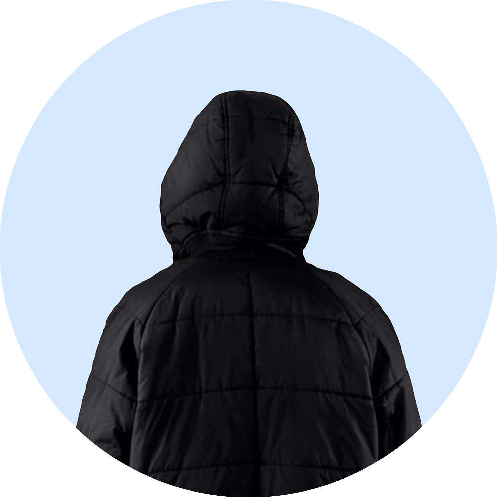

About

Hi, I’m Malte. I was born in 1983 in Schwedt/Oder. I studied fine art in Hannover (FH Hannover) and Berlin (KH-Berlin) from 2004 to 2009 and sociology in Berlin (HU Berlin) and in Bielefeld (Bielefeld University) from 2014 to 2018. I have been working at the German Centre for Science and Higher Education Research (DZHW) since 2018 in various research projects and contexts as a (Social) Data Scientist.
My main research interests are programming with R and Python, computational social science, machine learning, research collaborations, interdisciplinarity and sociology of art and culture.
GitHub
In the context of my work as a research assistant at the German Centre for Science and Higher Education Research (DZHW), I have been able to significantly sharpen my profile as a (social) data scientist, which I had already developed during my studies: My everyday dealings with large amounts of data sensitised me early on to the great importance of a reproducible analytical pipeline. I therefore have an adept command of various version control tools, markup and scripting languages, which enables me to work with complex data structures in a reproducible, transparent and efficient manner at all times. For me, the most central tool for a reproducible analytical pipeline is Git(Hub):
<!-- Loading stuff -->
Loading the data just for you.
If you would like to find out more about the progress of my projects,, check out my GitHub repositorys.
I’m still new to Twitter, but I really like the possibility of agile, scientific communication. The often polemical way of communicating on Twitter, on the other hand, is rather alien to me. I am a friend of fact-oriented, academic communication. With this in mind, check out my Twitter account, follow and retweet tweets that seem relevant to you!
When I’m not working on new Data Scientist topics in my free time, I work on 3D sculptures and animations. My tool of choice is the open source software Blender. I have also recently been working on image production with the help of Artificial Intelligence. Some of my work can be found on the Instagram account of Chernoff-Faces.
Running
When I’m not working on my computer, I’ve been going running in my spare time for about 10 years. The winter asions are usually weak, but in spring, summer and autumn I usually do my rounds regularly. Here are details of one of my recent runs:
For more information you can check my Garmin profile here.